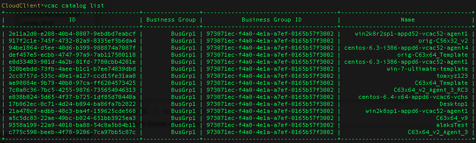

In order to request a new machine, application (from Application Director) or service (from Advanced Service Designer) you will need the catalogid & groupid at a minimum.
Retrieve the desired groupid & catalogid with the command vra catalog list

vra catalog newrequest --groupid 973071ec-f4a0-4e1a-a7ef-0165b57f3002 --id ae90084e-9b79-40b0-97ca-ff6204573425 --reason "New Request" --properties "VirtualMachine.Network0.Name=Developement,VirtualMachine.Network0.Address=10.23.104.10"